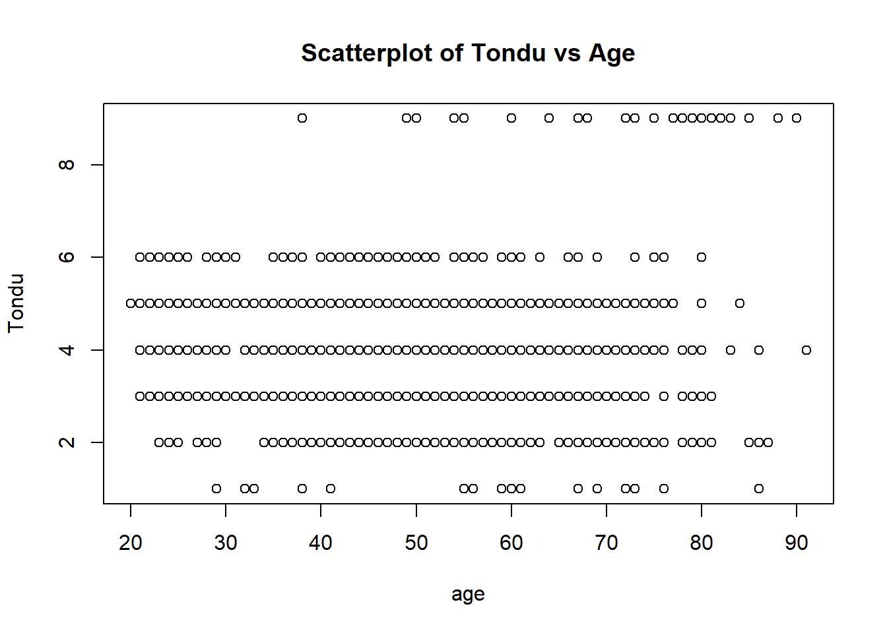
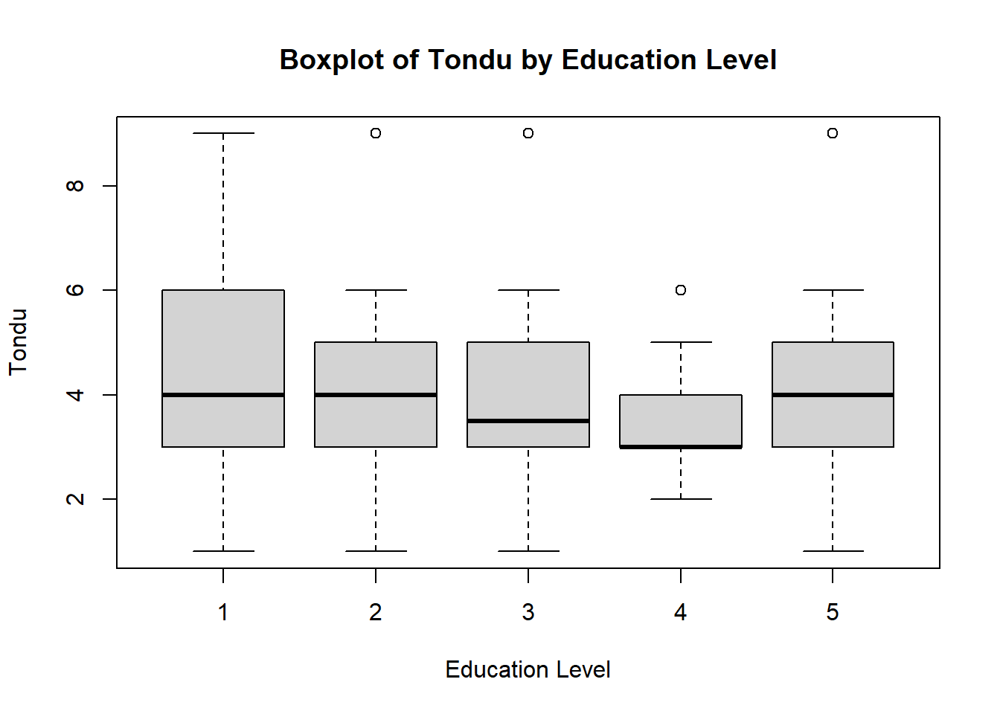
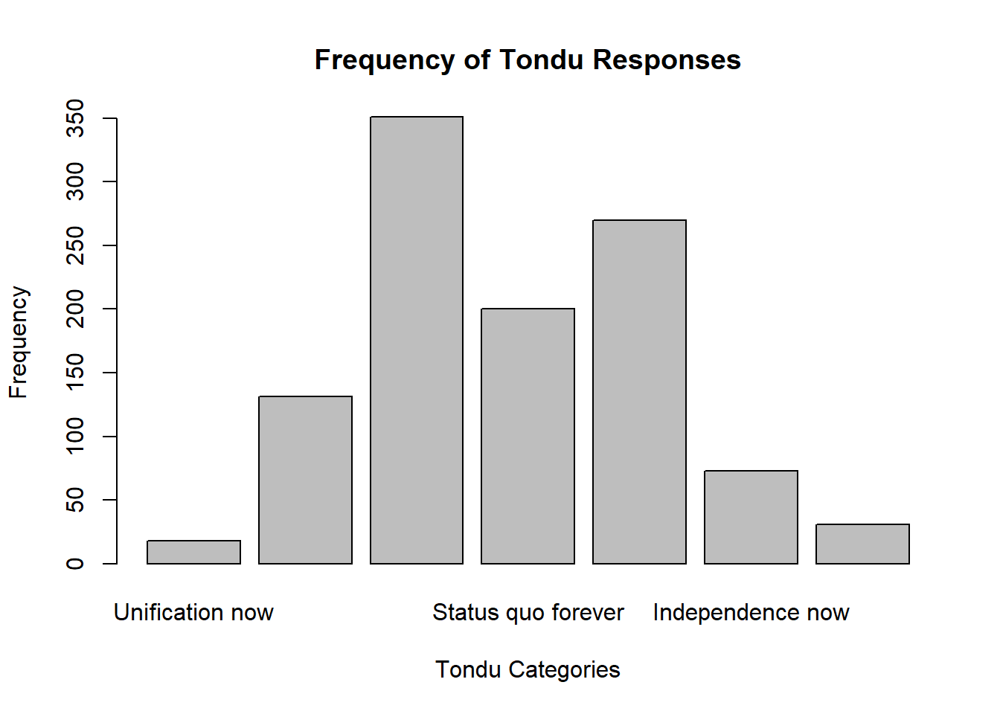

library(haven)
TEDS_2016 <-
read_stata("TEDS_2016.dta")
# Remove rows with missing values
Clean_TEDS_2016 <- na.omit(TEDS_2016)
summary(Clean_TEDS_2016[c("Tondu", "female", "DPP", "age", "income", "edu", "Taiwanese", "Econ_worse")]) Tondu female DPP age
Min. :1.000 Min. :0.0000 Min. :0.0000 Min. :20.00
1st Qu.:3.000 1st Qu.:0.0000 1st Qu.:0.0000 1st Qu.:36.25
Median :4.000 Median :0.0000 Median :0.0000 Median :49.00
Mean :3.911 Mean :0.4842 Mean :0.4199 Mean :48.65
3rd Qu.:5.000 3rd Qu.:1.0000 3rd Qu.:1.0000 3rd Qu.:60.00
Max. :9.000 Max. :1.0000 Max. :1.0000 Max. :91.00
income edu Taiwanese Econ_worse
Min. : 1.00 Min. :1.000 Min. :0.0000 Min. :0.0000
1st Qu.: 3.00 1st Qu.:2.000 1st Qu.:0.0000 1st Qu.:0.0000
Median : 5.00 Median :3.000 Median :1.0000 Median :1.0000
Mean : 5.32 Mean :3.429 Mean :0.6341 Mean :0.5801
3rd Qu.: 8.00 3rd Qu.:5.000 3rd Qu.:1.0000 3rd Qu.:1.0000
Max. :10.00 Max. :5.000 Max. :1.0000 Max. :1.0000 cor(Clean_TEDS_2016[c("Tondu", "age", "income")], use = "complete.obs") Tondu age income
Tondu 1.000000000 0.004867868 -0.1141681
age 0.004867868 1.000000000 -0.2286319
income -0.114168090 -0.228631866 1.0000000plot(Clean_TEDS_2016$age, Clean_TEDS_2016$Tondu, xlab = "age", ylab = "Tondu", main = "Scatterplot of Tondu vs Age")
chisq.test(Clean_TEDS_2016$Tondu, Clean_TEDS_2016$female)
Pearson's Chi-squared test
data: Clean_TEDS_2016$Tondu and Clean_TEDS_2016$female
X-squared = 29.399, df = 6, p-value = 5.111e-05chisq.test(Clean_TEDS_2016$Tondu, Clean_TEDS_2016$DPP)
Pearson's Chi-squared test
data: Clean_TEDS_2016$Tondu and Clean_TEDS_2016$DPP
X-squared = 177.52, df = 6, p-value < 2.2e-16chisq.test(Clean_TEDS_2016$Tondu, Clean_TEDS_2016$age)Warning in chisq.test(Clean_TEDS_2016$Tondu, Clean_TEDS_2016$age): Chi-squared
approximation may be incorrect
Pearson's Chi-squared test
data: Clean_TEDS_2016$Tondu and Clean_TEDS_2016$age
X-squared = 733.05, df = 420, p-value < 2.2e-16chisq.test(Clean_TEDS_2016$Tondu, Clean_TEDS_2016$income)Warning in chisq.test(Clean_TEDS_2016$Tondu, Clean_TEDS_2016$income): Chi-
squared approximation may be incorrect
Pearson's Chi-squared test
data: Clean_TEDS_2016$Tondu and Clean_TEDS_2016$income
X-squared = 115.31, df = 54, p-value = 2.437e-06chisq.test(Clean_TEDS_2016$Tondu, Clean_TEDS_2016$edu)Warning in chisq.test(Clean_TEDS_2016$Tondu, Clean_TEDS_2016$edu): Chi-squared
approximation may be incorrect
Pearson's Chi-squared test
data: Clean_TEDS_2016$Tondu and Clean_TEDS_2016$edu
X-squared = 183.67, df = 24, p-value < 2.2e-16chisq.test(Clean_TEDS_2016$Tondu, Clean_TEDS_2016$Taiwanese)
Pearson's Chi-squared test
data: Clean_TEDS_2016$Tondu and Clean_TEDS_2016$Taiwanese
X-squared = 211.99, df = 6, p-value < 2.2e-16chisq.test(Clean_TEDS_2016$Tondu, Clean_TEDS_2016$Econ_worse)
Pearson's Chi-squared test
data: Clean_TEDS_2016$Tondu and Clean_TEDS_2016$Econ_worse
X-squared = 17.168, df = 6, p-value = 0.008684summary(aov(Tondu ~ edu, data = Clean_TEDS_2016)) Df Sum Sq Mean Sq F value Pr(>F)
edu 1 29.8 29.763 13.66 0.00023 ***
Residuals 1072 2335.7 2.179
---
Signif. codes: 0 '***' 0.001 '**' 0.01 '*' 0.05 '.' 0.1 ' ' 1boxplot(Tondu ~ edu, data = Clean_TEDS_2016, xlab = "Education Level", ylab = "Tondu", main = "Boxplot of Tondu by Education Level")
# Assign labels to the Tondu variable
Clean_TEDS_2016$Tondu <- factor(Clean_TEDS_2016$Tondu, labels = c("Unification now",
"Status quo, unif. in future",
"Status quo, decide later",
"Status quo forever",
"Status quo, indep. in future",
"Independence now",
"No response"))
# Generate frequency table
freq_table <- table(Clean_TEDS_2016$Tondu)
print(freq_table)
Unification now Status quo, unif. in future
18 131
Status quo, decide later Status quo forever
351 200
Status quo, indep. in future Independence now
270 73
No response
31 # Generate bar chart
barplot(freq_table, main = "Frequency of Tondu Responses",
xlab = "Tondu Categories", ylab = "Frequency")
col = "skyblue"
border = "black"
ylim = c(0, max(freq_table) * 1.1)
las = 2